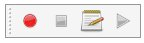

Makros sind eine bequeme Möglichkeit, komplexe Aktionen in FreeCAD zu bewältigen. Sie können einfach Aktionen nach Belieben aufzeichnen, unter einem Namen speichern und diese jederzeit wieder abspielen. Da ein Makro in Wirklichkeit eine Liste aus Python-Befehlen ist, können Sie sie auch bearbeiten und sehr komplexe Skripte erstellen.
Wenn Sie die Ausgabe in der Konsole aktivieren (Menü Bearbeiten -> Einstellungen -> Allgemein -> Makros -> Script Befehle in Python-Konsole anzeigen), werden Sie sehen, dass jede Aktion die Sie in FreeCAD vornehmen, wie z.B. das Drücken einer Taste, den entsprechenden Python-Befehl ausgibt. Genau diese Befehle sind es, die auch in einem Makro aufgezeichnet werden. Das wichtigste Werkzeug zur Erstellung von Makros ist die Makro-Symbolleiste: .
Darauf haben Sie 4 Knöpfe: Aufnahme, Beenden der Aufnahme, Bearbeitung und Wiedergabe des aktuellen Makros.
Sie ist sehr einfach zu bedienen: Drücken Sie die Aufnahmetaste. Nun werden Sie aufgefordert einen Namen für Ihr Makro zu vergeben, dann führen Sie einige Aktionen aus. Wenn Sie fertig sind, klicken Sie auf die Schaltfläche Aufzeichnung beenden, und Ihre Aktionen werden gespeichert. Zum Bearbeiten klicken Sie nun auf den Makro-Dialog mit der Schaltfläche Bearbeiten:
Dort können Sie Ihre Makros verwalten, löschen, bearbeiten oder von Grund auf neue erstellen. Wenn Sie ein Makro bearbeiten, wird es in einem Editor-Fenster geöffnet, wo Sie Änderungen an seinem Code vornehmen können.
Drücken Sie die Aufnahmetaste, geben Sie einen Namen ein, z. B. "Zylinder 10x10", anschließend erstellen Sie in der Part Workbench einen Zylinder mit Radius = 10 und Höhe = 10. Dann drücken Sie den "Aufnahme beenden"-Knopf. Im Bearbeiten-Dialog von Makros können Sie den Python-Code sehen der aufgezeichnet wurde, und wenn Sie wollen, können Sie daran Änderungen vornehmen. Um ein Makro auszuführen, drücken Sie einfach auf die Schaltfläche Ausführen in der Symbolleiste, während Ihr Makro im Editor angezeigt wird. Ihre Makros werden immer auf der Festplatte gespeichert, so dass jede Änderung die Sie machen, oder ein Makro das Sie neu erstellen, immer beim nächsten Start von FreeCAD verfügbar sein wird.
Natürlich ist es nicht praktisch vor dem Benutzen immer erst ein Makro in den Editor zu laden. FreeCAD bietet deutlich bessere Möglichkeiten um Ihr Makro zu verwenden, wie das Zuweisen einer Tastenkombination oder einen Eintrag im Menü erstellen. Sobald Ihr Makro erstellt wurde, können Sie dies erledigen im Menü: Tools -> Benutzerdefiniert:
Customize Toolbars This way you can make your macro become a real tool, just like any standard FreeCAD tool. This, added to the power of python scripting within FreeCAD, makes it possible to easily add your own tools to the interface. Read on to the Scripting page if you want to know more about python scripting...
How to install macros You can also directly copy/paste python code into a macro, without recording GUI action. Simply create a new macro, edit it, and paste your code. You can then save your macro the same way as you save a FreeCAD document. Next time you start FreeCAD, the macro will appear under the "Installed Macros" item of the Macro menu.
Besuchen Sie die Macros recipes Seite, um sich einige nützliche Makros holen, um diese Ihrer FreeCAD Installation hinzuzufügen.
Weitere Arbeitsbereiche installieren
{kind=link}
{kind=link}
{kind=link}